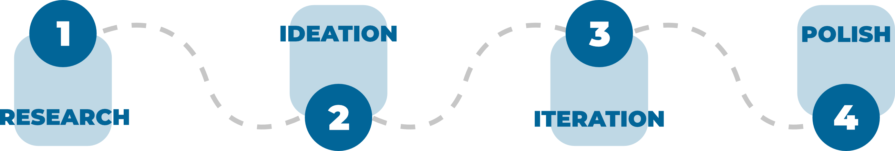

1 MINUTE BRIEF - TLDR;
The Problem -
There are no competitors on the market that offer a first-party app for transit systems within Whatcom county that was sufficiently feature-rich yet intuitive. 50% of respondents in a survey use Google Maps, which does not provide proprietary data on the inconsistent schedules of WTA busses.
The Solution -
Designed a first party, mobile application for finding route information and trip planning with strong WTA branding.
What I did -
Collaborated with three other students from various disciplines to research, wireframe, prototype, user test, and iterate on the final product.
I also handled all of the visual and creative direction of the project as well. Responsible for soft rebranding of WTA and all high fidelity prototypes and assets.
Core Challenges -
Product identity
Since the success of our product's premise was built entirely around the idea of instilling trust in the bus system through our app's UI, how our app looked and felt at a glance was just as important as everything else. We initially struggled on making the app feel like a WTA product due to their outdating design system and lack of branding guidelines.
First time for everything
This was my first UX class and case study ever - with that came a lot of exploration and a lot of hands on learning. I started off the class making wireframes on Powerpoint, and by the end I was making functional prototypes on Adobe XD and high fidelity mockups on Illustrator.
The Process -
The Research -
We conducted a user survey to better gauge the market and our target audience. The survey was distributed around Bellingham-centered facebook groups and subreddits - we wanted to make sure our survey covered more than just students, but wanted to make sure we were only getting local respondents who actually had experience with WTA specifically.
The survey gave us valuable insight on established user behavior regarding route discovery and travel. Our decision to go with a mobile solution was validated through smartphone usage statistics. We also identified Google Maps early on as a competitor, and that helped us further develop our product's identity to differentiate ourselves from the current popular solution.
In a similar vein, we also conducted an early market analysis and used a competitor matrix to understand how our solution would fit into the big picture. Ultimately, there were a variety of transportation apps available to the public, no competitor offered a first-party app for transit systems within Whatcom county that was sufficiently feature-rich yet intuitive.
User Personas

Ideation -
Sketches
We started with basic free-form rapid prototyping, pictured left. The primary objective of this activity was to explore very early ideas of how we wanted the app to feel without being constrained by the minutiae of where to place UX elements.
Afterwards, we mapped our sketches to preliminary paper prototypes that we user tested against various transit users around campus (not pictured). Once the basic flaws were fixed, we moved onto a digital prototype done through Adobe XD.
Iteration -
RITE Methodology
From here, we decided to rapidly iterate between user testing sessions. With the first digital prototype finished, we used Adobe XD's mobile app and features to quickly user test between transit riders of various backgrounds. Between each set of tests, we would fix main concerns such as features that were entirely unused or UI elements whose functions were obvious to us as the designers but didn't read as well to those unacquainted with the project.
User Testing
Throughout the prototyping process, we would frequently user test against everyone that we could. We found that the key to getting the most out of the iterative design process was to quickly identify key problems and pain points in users and fix that. It was important to test against a variety of people to eliminate as many biases as possible.
Thanks to our multidisciplinary team, we thought to use testing methodologies from other disciplines as well. A big influence on our thinking was black box and white box testing popular in software engineering. The idea of testing against both those who were in our class and were fairly cognizant of what we were doing to random peers/transit users was instrumental to the success of our prototyping phase. Ultimately, getting a wide range of backgrounds and worldviews involved in our project aided us greatly in rapidly developing our prototype into a finished first solution.
The Polish -
Our first attempt at high fidelity mockups after our layouts, functionality, and user flow were finalized through user testing was unsuccessful. This was largely because our product's design language didn't match the established brand language of WTA.
Although WTA has some rather outdated and inconsistent branding, because it's so ubiquitous around town, locals know at a glance when something 'feels' like it's WTA or not. We started over from the beginning.
Colors
We started off with the same base value as the original WTA color. From there, we altered the luminance values to get our accents, and for other primary colors, we would find an appropriate relationship on the color wheel so that the color palette felt balanced.
Language
We noticed that although the branding was fairly all over the place, the actual busses themselves had a largely universal language - soft, curved lines with gentle slopes and bubbles. These motifs point to Whatcom's heritage and its proximity to Lake Whatcom, and by working off of this idea, we quickly developed a design language that is distinctly WTA but also in the 21st century.